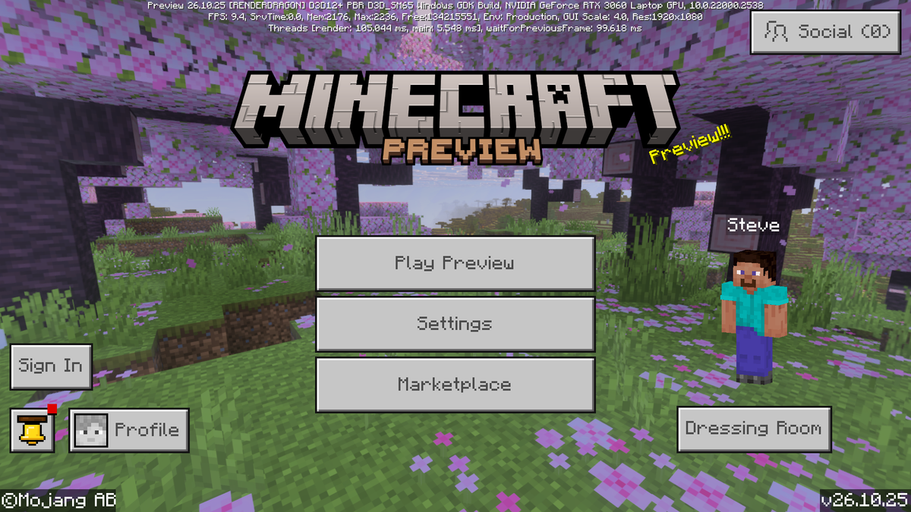

Nexial
Actualizaciones y Granjas
Todo lo importante de Minecraft Java y Bedrock en una sola página.
Minecraft Java Edition
1.21.11

Fecha: 9/12/2025
La actualización 1.21.11 de Minecraft, llamada “Mounts of Mayhem”, se centra en la exploración acuática y nuevas monturas. Introduce el Nautilus, un mob submarino que los jugadores pueden domar y montar para moverse rápidamente bajo el agua, junto a su versión hostil, el Zombie Nautilus. Además, añade mejoras como la Nautilus Armor y la Netherite Horse Armor, y una nueva arma llamada Spear, diseñada para un combate más dinámico. La versión también optimiza animaciones, corrige errores en redstone submarino y en la generación de estructuras oceánicas, haciendo que la exploración y el combate bajo el agua sean más fluidos y entretenidos, al mismo tiempo que amplía las posibilidades de aventura y supervivencia en los océanos del juego.
26.1-snapshot-10

La Minecraft 26-snapshot-10 Snapshot es una versión de prueba lanzada por Mojang Studios que añade novedades antes de la actualización oficial. En esta snapshot destacan los nuevos animales bebé, que ahora tienen más variedad y detalles, haciendo que el mundo sea más realista y vivo. También incluye pequeños ajustes y correcciones de errores.
Minecraft Bedrock Edition
26.2

La 26.2 de Minecraft Bedrock Edition es una actualización que se centra principalmente en mejorar el rendimiento y la estabilidad del juego, corrigiendo errores y bugs que podían causar fallos o crasheos, además de optimizar su funcionamiento en móviles, consolas y Windows.
BETA (Preview) 26.10.25

La beta (Preview) 26.10.25 de Minecraft Bedrock Edition es una versión de prueba que añade pequeños cambios en la jugabilidad y corrige errores, incluyendo mejoras en el comportamiento de mobs, ajustes en el Trial Spawner para que no genere demasiados enemigos, cambios en los intercambios (como que las Name Tags ya no las vendan los Libreros y ahora las tenga el Comerciante Ambulante), mejoras visuales como que los Glow Squid bebés emitan luz y que los armor trims vuelvan a verse correctamente, además de optimizaciones en la interfaz como la búsqueda unificada en el inventario y mayor estabilidad general del juego, aunque al ser beta puede tener fallos o bugs.